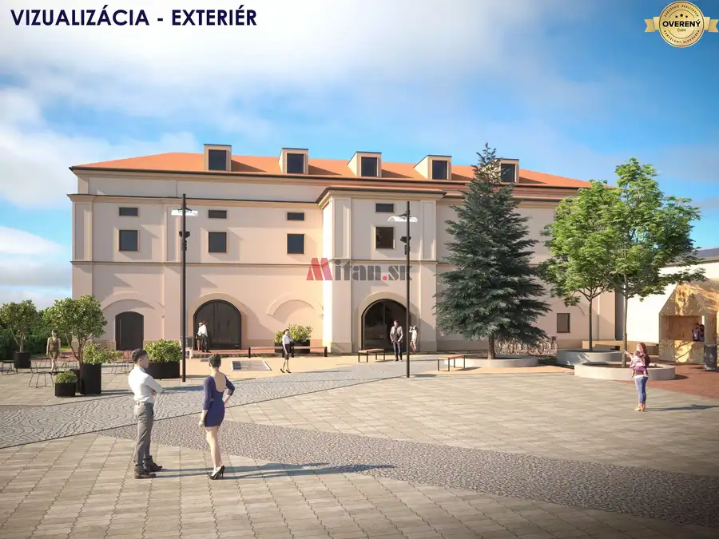
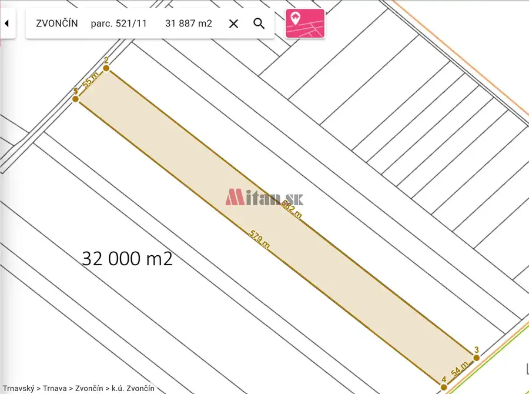
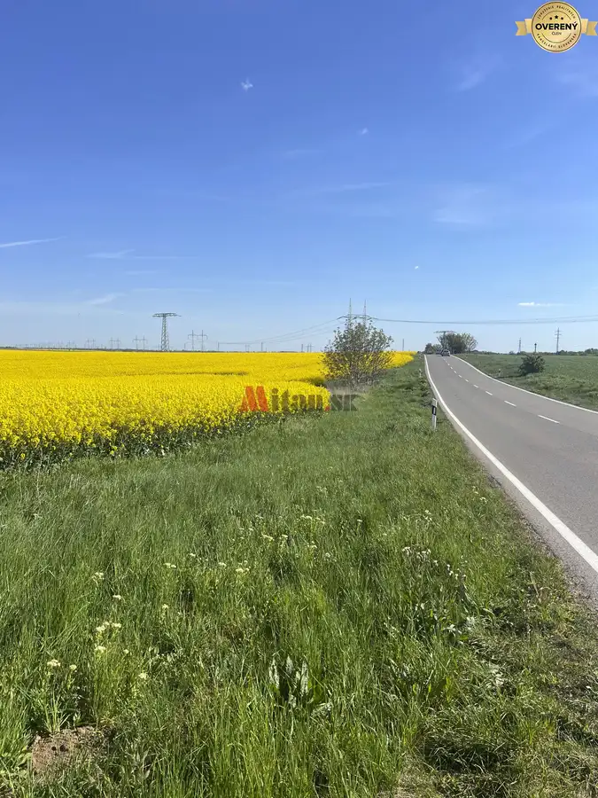

Pozemok pre výstavbu rodinných domov - CENTRO Čierna Voda
Chorvátsky Grob
- Plocha3800 m²
- Vlastníctvofiremné
O nehnuteľnosti
MITAN® ponúka na predaj
STAVEBNÝ POZEMOK pre výstavbu rodinných domov
o výmere 3 800 m2. Pozemok sa nachádza
v centre Čiernej Vody, obec Chorvátsky Grob
pri križovatke prístupových ciest z obce Vajnory a Triblavinskej cesty
v časti CENTRO
. Územie
U 22/1
je podľa Zmien a doplnkov územného plánu obce platných od júla 2017 určené pre malopodlažnú bytovú zástavbu, s dominantným využitím pre bývanie v rodinných domoch a v malopodlažných bytových domoch. Prípustným využitím sú aj zariadenia občianskej vybavenosti nerušiace obytné prostredie. Maximálna zastavanosť je 35% a maximálny počet nadzemných podlaží je 3 plus jedno ustupujúce podlažie. Štruktúra usporiadania môže byť v podobe solitérov s plochými strechami alebo radová zástavba.
Pozemok je vhodný pre päť až šesť rodinných domov.
Pozemok bol pripravovaný ako súčasť
Pro
jektu
m
iestneho
Cen
tra - CENTRO, kde už je v prevádzke nový obchodný dom COOP Jednota a pripravuje sa areál školy.
Obec má
priame napojenie na diaľnicu D1
cez diaľničnú križovatku Triblavina. V súčasnosti má obec cestné spojenie cez Triblavinskú cestu, s napojením aj na starú Seneckú cestu, pričom existujúci funkčný most cez diaľnicu bude i po rozšírení diaľnice nahradený novým mostom. Vzdialenosť od mestskej časti
Bratislava - Vajnory
je 2 km.
Vedenia inžinierskych sietí sú v dosahu pozemku
a sú vyznačené v obrazovej časti inzerátu.
Cena:
216EUR/m2 vrátane provízie
Bližšie informácie na:
Sme radi že Vám môžeme ponúknuť naše 30-ročné skúsenosti
na realitnom trhu.
Parametre
| Rozloha pozemku | 3800 m² |
|---|---|
| Poschodie | neuvedené |
| Vlastníctvo | firemné |
| Odvoz odpadu | áno |
| Voda | verejný vodovod |
| El. napätie | 230/400V |
| Plyn | áno |
| Kanalizácia | áno |
| Inžinierske siete | áno |
| Dátum zverejnenia | 20. 12. 2023 |
Kde to je
Mohlo by Vás zaujímať

Nebytové priestory10 750 000 €Objekt bývalej sýpky s pozemkami na predaj, CENTRO Čierna Voda Chorvátsky Grob 2300 m² MITAN® ponúka na predaj objekt bývalej sýpky s priľahlými pozemkami. Objekt sa nachádza v centre Čiernej Vody, obec Chorvátsky Grob pri križovatke…
Pozemok2 109 000 €Predaj poľnohospodárskej pôdy, Trnava Trnava 31887 m² Ponúkame na predaj výnimočný poľnohospodársky pozemok pri Trnave. Tento rozľahlý pozemok o rozlohe 31 887 m² je ideálnou voľbou pre tých, ktorí…
Pozemok3 169 000 €Orná pôda pri Trnave, 81 700 m² Špačince 81755 m² ORNÁ PÔDA PRI TRNAVE, 81 700 m² Realitná kancelária MITAN ponúka exkluzívne na predaj kvalitnú ornú pôdu v bezprostrednej blízkosti mesta Trnava,…